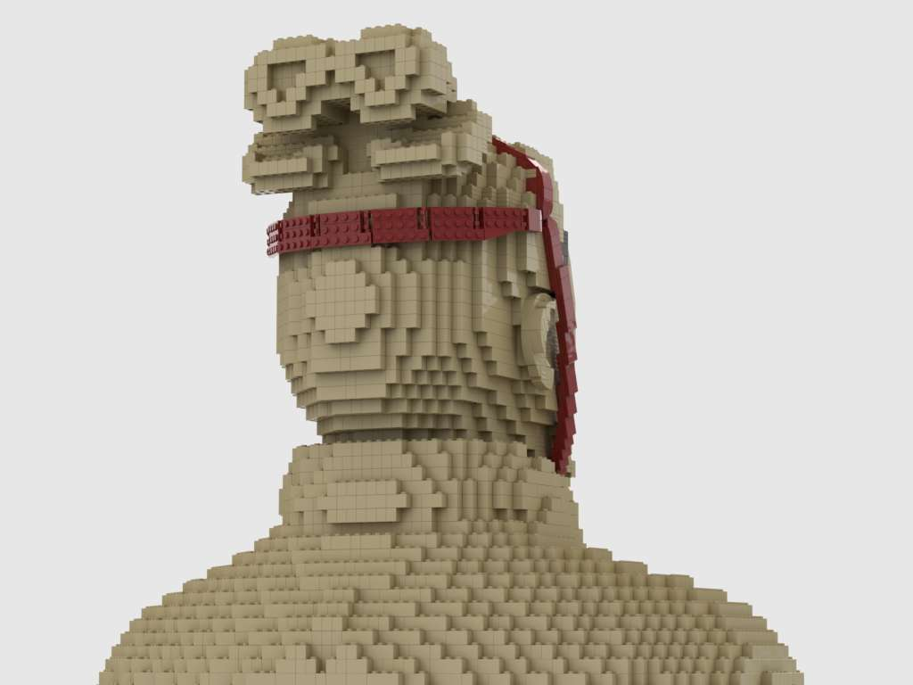

Inspired by Malaysian's "King of the Road" Perodua Myvi car model, we created a 1:1 size model of it and this one is called Mybi.
For this project, I was tasked to design the wiper, rooftop handles, fog light, and my star piece, the headlight. It took me 2 months to finalize the design. We bought the actual Myvi's headlight as a reference for me to explore, other than me peeking at my friend's Myvi Extreme 1.5 car model to study the exact design of the exact headlight from the exact car model.
And you're seeing the final product, in these pictures.
hotrod
This beau was a testament of how crazy or creative our team is when we want to put a spin on the Mybi model that we made. Therefore, 1940s mybi hotrod was created.
This project was a lot of fun as all of us designers were able to put our own spin into the design. I was tasked to handle the whole dashboard and the centre console which then turned to handling more than half of the interiors. When I first started the project, there was no exact reference on what items to put on the dashboard center console. After researching and collecting ideas from my team, I decided to design an accessible glovebox, rotating-dials clock, swinging ashtray, and I got stopped before my designs got too ambitious.
The builders had to build this project in a very sort amount of time, so I was involved in building it as well. I went home at 5am on the last night completing it. Thanks to all of the designers and builders team, the incredible outcome made the effort that we put in together worthwhile.
Exterior
Interior
The glovebox's door was designed to swing open 110°.
Part of the centre console (ashtray and cigarette lighter socket) that was designed with hinges and there are details inside/under it too.
terracota
The Terracotta Army is a collection of terracotta sculptures depicting the armies of Qin Shi Huang, the first emperor of China. This terracota model that we did is actually one of the high-ranking warrior in the army.
For this project, there were only 2 designers working on it. Me and my colleague, Zaid. For the reason that I am such a perfectionist and had trouble asking for help, I experienced burnout twice from this project alone because I was tasked to design the face as well. I needed to focus on getting the expression and the face shape correct. It took me at least 2 months working on the face alone. The hardest brick project I ever took on so far.
And voila, the end result is handsome.

jukebox
Based on 1940s Wurlitzer 1015 Vinyl Jukebox, this project was meant to complement the 1940s Mybi Hotrod at the exhibition. This jukebox has fully functioning speaker and lighting systems, much thanks to the animatronics team.
I was tasked to design the slanted part of the jukebox and the surrounding components as you can see. And my challenge was the slanted part being surrounded by so many components.
greebling
Greebling refers to the process of adding small, textured details to a model or creation to make it look more complex and detailed.
For this project, we were tasked to make greeble designs for the company's logo. It was new thing for us, the technique was that the placements of each elements were not supposed to make sense (aka randomized). It was a little difficult for me at first, to create unorganized yet organized work and to work on the small details from the start. But the result turned out more than alright.
In conlusion...
Due to the nature of some of the projects I worked on, many of them are confidential and has not been launched to the public. However, each one helped me gain invaluable experience collaborating on high-impact initiatives that have shaped my professional growth and and contributed to the company’s strategic goals. I look forward to applying these experiences to future challenges.